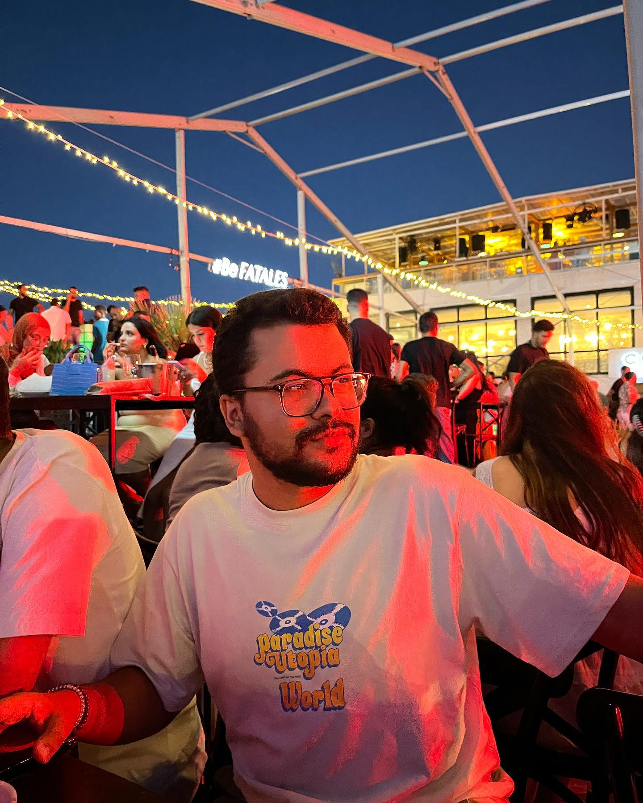
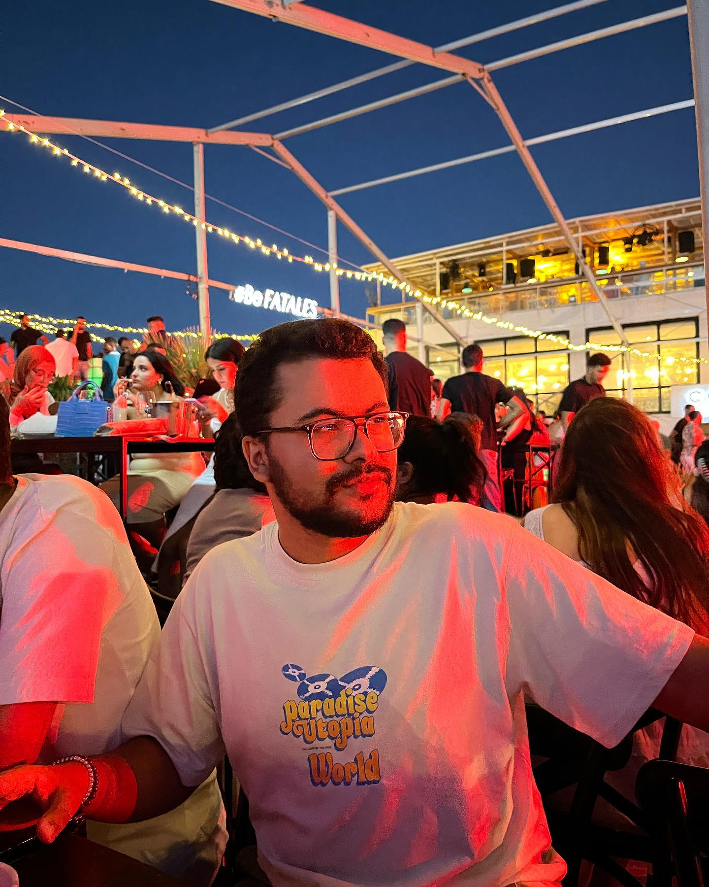
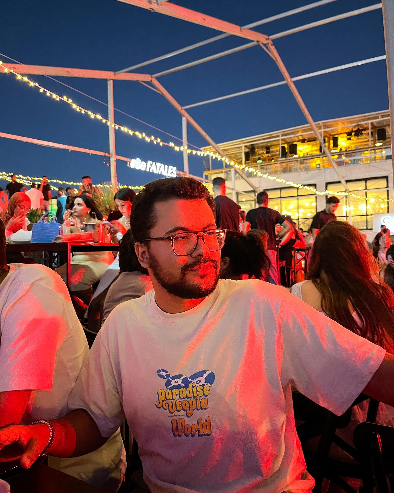
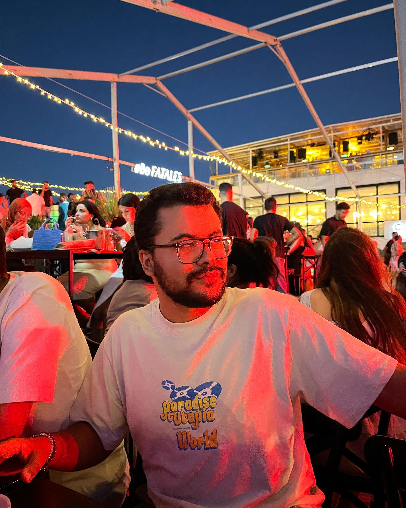
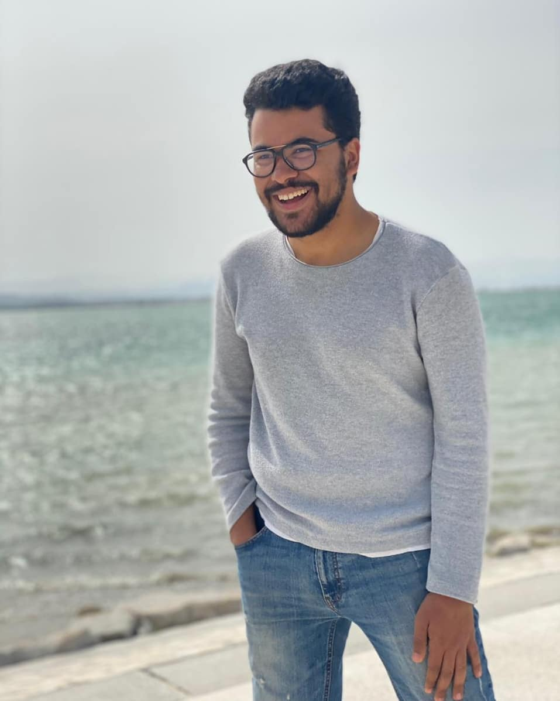

Étudiant en ingénierie informatique à l’ESPRIT, passionné par la résolution de problèmes complexes. Compétent en gestion de projet et en communication interpersonnelle. Bosseur, motivé, avec une bonne écoute et un sens de l’analyse fine. Cherche à mettre à profit mon dynamisme dans une nouvelle expérience professionnelle.
Voici une photo de mon CV:
